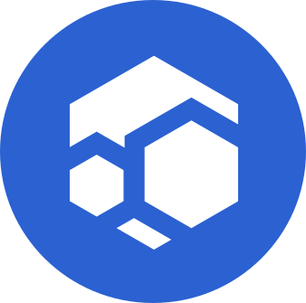
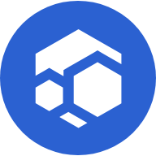
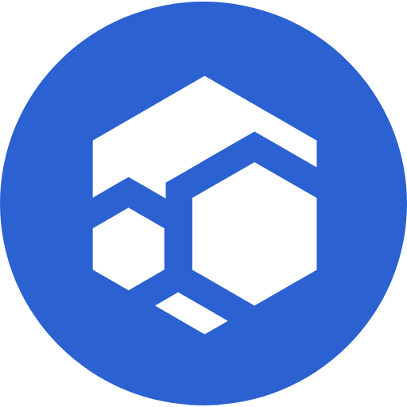

Blue Wave, Montserrat, Open Sans and the symbol come from the Flux Brand Book, version 2.0. The depth, the motion and the moon are Atlas.
The chrome lockup lives in the top bar and the ambient screen. The full lockup is the official logo with the sub-brand word set the way the book sets foundation: lowercase, Montserrat SemiBold, tucked top right above the wordmark.
Round symbol 26 px, then a gap of 9 px (1.6 x), then Atlas in Montserrat SemiBold 18 px, white. The same lockup, enlarged 3.2 times, below. Clear space of at least x sits on every side, where x is 0.2174 of the symbol diameter. The symbol is never smaller than 16 px.
The official files, untouched, with the sub-brand word added. Used in About Flux, the boot screen, empty states and print. Positive and negative versions are the book's own: blue on white, white on black, white on Blue Wave.
The book builds the logo from one unit, x. The round symbol is 4.6 x across, the gap to the wordmark is x, the wordmark is 8.8 x, and nothing enters a margin of x around the whole. Atlas measures from these, never from the screen.
Measured on the official logo file. x = 0.2174 of the symbol diameter. The sub-brand word sits inside the wordmark's box, so it adds no width.
Symbol 16 px, logo 24 px high. Below that the symbol is used alone, as the favicon is. The mark without its disc needs a gap of 1.4 x to the wordmark, as in the book's second construction. The round symbol never gets a gap smaller than x.
The book says the symbol synthesizes three blocks representing decentralized node power, and functions as a whole block at the same time. Atlas reads that literally: the three blocks are the three node tiers, the bar is the development fund, and the whole is the chain.
Tonal rendering, as the moon wears it. White cap and bar, light gray big hexagon, mid gray small hexagon. Tier colours appear beside the symbol, on the beams and chips that leave it, and never on the symbol itself.
Blue Wave is the one accent. The interface is Flux Black lifted toward Graphite with a Blue Wave cast, and white is the attention colour: selections, flares, beam heads. Tier and status colours are reserved for meaning.
Interaction ramp derived from Blue Wave (hue held, lightness stepped): 950 to 50. 400 is the accent for text and focus, 500 the hover fill, 600 is Blue Wave itself and the button fill (white on it is 5.6:1). Shade 1 and shade 2 from the book sit at 500 and 400.
Cyan, violet and amber are spread in hue, lightness and shape (one, two and three capsules), so they survive colour-vision differences. Stratus amber is the complement of Blue Wave. They touch nodes and payout beams only.
State, always with an icon and a word. Ok green, pending uses Blue Wave shade 2, warn orange, critical red. Never a series colour.
Land is lit in Blue Wave shade 1 by day and a deep Blue Wave by night. City lights are a cool white, not amber. Ocean stays near black so the hex land reads.
The book pairs Montserrat with Open Sans and keeps Lora as the accent. IBM Plex Mono is the one addition: the book names no monospace, and data needs one. All four are SIL Open Font License, self-hosted as variable woff2.
| Role | Face | Where |
|---|---|---|
| Display numerals | Montserrat 300, tabular | Block tip, ambient clock, boot percentage, stat tiles |
| Titles and buttons | Montserrat 600 | Window titles, section headings, buttons, tier names, the word Atlas |
| Text | Open Sans 400, 600 | Body copy, labels, menus, tooltips, empty states |
| Editorial line | Lora italic 400 | One per view: the mission quote in About Flux, the sentence on the ambient screen |
| Data | IBM Plex Mono 400 to 600 | Addresses, hashes, ports, timestamps, counters in lists, the terminal |
Six of these are the book's own incorrect-usage page. The last two are Atlas rules. Every example is drawn in brand colours only, because the logo is never shown outside them, not even to say no.
The symbol orbits the globe. A producer node sends a beam up to it, and it fires the payouts down: the cap to Stratus, the big hexagon to Nimbus, the small hexagon to Cumulus, the bar to the development fund. Its ring fills over the 30 second block.
The book's social media page shows the two forms: the round symbol, and a Blue Wave tile with the white glyph. Atlas uses the round symbol for tabs and any-purpose icons, and the tile for touch icons and the installed app. The files in assets/brand are the official symbol, unmodified.

Flux Atlasfavicon.svg, browser tab
icon-192.png, any
icon-512.png, anyTheme colour and splash are Flux Black, #000000. The manifest names the app Flux Atlas, short name Atlas, and starts it on the shell.
Applied to every screen before it ships. The same list sits in the design direction under brand rules.